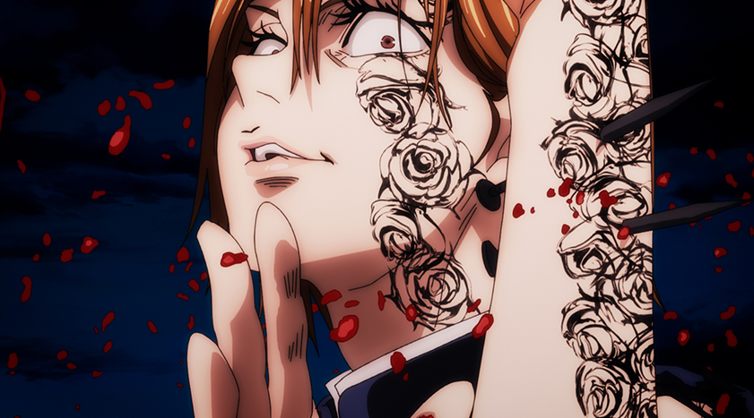

O que é Jujutsu ?
Jujutsu Kaisen (呪じゅ術じゅつ廻かい戦せん. "Batalha de Feiticeiros") é um mangá japonês escrito e ilustrado por Gege Akutami, serializado na Weekly Shōnen Jump desde 5 de março de 2018. Os capítulos individuais são compilados em volume tankōbon, e publicados pela Shueisha desde julho de 2018. A série é licenciada e publicada no Brasil pela editora Panini.
O que acontece em Jujutsu ?

Yuuji Itadori é um estudante do ensino médio que vive em Sendai com seu avô. Ele evita regularmente a equipe de atletismo de sua escola devido à sua aversão ao esporte, apesar de seu talento inato para o tal. Em vez disso, ele decide ingressar no Clube de Ocultismo, onde pode relaxar e sair com seus veteranos, e deixar a escola às 17h para visitar seu avô no hospital. Enquanto ele (seu avô) está no leito de morte, seu avô envia duas mensagens poderosas dentro de Yuuji - "sempre ajude as pessoas" e " "morra cercado por uma multidão".Cap. 1
Após a morte de seu avô, Yuuji interpreta essas mensagens como uma afirmação - todo mundo merece "uma morte digna", ele então é confrontado por Megumi Fushiguro, um xamã (巫? Shaman) que o informa Yuji Itadori de um objeto amaldiçoado de nível especial em sua escola com o qual Yuuji recentemente entrou em contato.
Seus amigos no Clube de Ocultismo abriram o objeto amaldiçoado de nível especial, que era um dedo podre, um dos vinte (20) dedos de Ryomen Sukuna, uma Maldição de nível especial muito poderosa, que tinha quatro braços, agora com seu atual hospedeiro (Yuji Itadori) que sen recusa a entregar o dominio de seu corpo a Sukuna.
Após abrir o objeto amaldiçoado, objeto começou a atrair maldições para a escola, maldições criadas por emoções negativas das pessoas e fortalecidas pelo consumo de poderes mágicos presentes em xamãs ou em tais encantos. Incapaz de derrotar as Maldições devido à sua falta de poderes mágicos, Yuuji engole o dedo para proteger Megumi e seus amigos e se torna o anfitrião de Sukuna, uma poderosa Maldição.Cap. 1.
Devido à natureza maligna de Sukuna, todos os Feiticeiros Jujutsu devem exorcizá-lo imediatamente. No entanto, apesar de possuído, Yuuji ainda é capaz de manter o controle sobre seu corpo em sua maior parte. Vendo isso, Satoru Gojou, professor de Megumi, decide levá-lo ao Colégio Técnico Metropolitano de Tóquio para propor um plano a seus superiores - adiar a sentença de morte de Yuuji até que ele consuma todos os dedos de Sukuna, permitindo que eles o exorcizem de uma vez por todas.
Para assitir JUJUTSU clique aqui
Personagens
Yūuji Itadori (虎杖 悠仁)

Voz de: Junya Enoki.
Dublado por: Yuri Tupper (Brasil).
Um atleta de 15 anos que se junta ao Clube de Ocultismo de sua escola para evitar o time de esportes. Depois de encontrar e abrir uma caixa contendo um objeto amaldiçoado semelhante a um dedo podre, sua escola é atacada por criaturas fantasmas conhecidas como Maldições. Para proteger seus amigos, ele consome o dedo podre e fica possuído por uma maldição conhecida como Sukuna.Cap.1
Mais tarde, ele se junta a Escola Técnica Superior de Jujutsu de Tóquio, sob a tutela de Satoru Gojou, onde é colocado sob uma espécie de sentença de morte, que fica suspensa até que ele consuma todos os dedos de Sukuna para exorciza-lo de uma vez por todas matar.Cap. 2
Megumi Fushiguro (伏黒 恵)

Voz de: Yuma Uchida.
Dublado por: Fabrício Vila Verde (Brasil).
Um xamã estudando no primeiro ano na Escola Técnica Superior de Jujutsu de Tóquio, sob a tutela de Satoru Gojou. Ele conhece Yuuji ao tentar localizar o objeto amaldiçoado de nível especial em sua escola. Ele é o único que convence Satoru a tentar salvar Yuuji de sua execução após sua posse por Sukuna. Ele usa seu poder de maldição para criar espíritos (式神? Shikigami) de suas próprias sombras para exorcizar Maldições. Ele foi apontado como poderoso por ter um grande potencial como xamã por várias outras pessoas poderosas, incluindo o próprio Sukuna.Cap. 1, 2, 9
Satoru Gojō (五条 悟)
Voz de: Yuichi Nakamura.
Dublado por: Léo Rabelo (Brasil).
Um xamã trabalhando como professor na Escola Técnica Superior de Jujutsu de Tóquio. Ele ensina Yuuji Itadori, Megumi Fushiguro e Nobara Kugisaki. Ele convence seus superiores a manter Yuuji vivo até que ele consuma todos os dedos de Sukuna. Embora seu título de "O Mais Forte" seja autoproclamado, a maioria dos aliados e inimigos nunca disputam o título e geralmente o consideram uma das pessoas mais perigosas do mundo.Cap. 2
Como resultado, ele é amplamente respeitado e venerado por xamãs, mesmo pelos da escola irmã da faculdade em Kyoto, e exerce grande influência no mundo do xamanismo. Ele usa seu poder de maldição para controlar o espaço ao seu redor de inúmeras maneiras.Cap. 14
Nobara Kugisaki (釘崎野 薔薇)
Voz de: Asami Seto.
Dublado por: Amanda Brigido (Brasil).
Uma xamã que estuda no primeiro ano da Escola Técnica Superior de Jujutsu de Tóquio, sob a tutela de Satoru Gojou. Ela se transferiu para poder morar em Tóquio sem nenhuma despesa. Ela conhece Yuuji Itadori e Megumi Fushiguro durante sua primeira missão oficial como xamã. Ela usa um martelo de arma de charme e unhas infundidas com seu poder de maldição para exorcizar Maldições.Cap. 4, 5
Ryomen Sukuna (両面宿儺)

Voz de: Junichi Suwabe.
Dublado por: Francisco Júnior (Brasil)
Uma maldição de nível especial que é considerado o indiscutível "Rei das Maldições". Segundo a lenda, Sukuna era um demônio semelhante a um humano com quatro braços que apareceu durante a era primordial da feitiçaria. Os feiticeiros desse período descobriram que não eram capazes de exorcizá-lo completamente, então eles recorreram a cortar seus 20 dedos e armazená-los como feitiços amaldiçoados, esperando que um dia esses feitiços fossem destruídos e, como resultado, ele realmente seria derrotado. Atualmente, ele é o "convidado " de Yuuji Itadori.Cap. 2
Sukuna se interessou ao ver Megume Fushiguro alcançar todo o seu potencial. Seu objetivo é obter controle total sobre o corpo de Yuuji e sair em uma matança.Cap. 8, 9.
Ele tem uma imensa quantidade de poder de maldição, e estima-se que sua força total esteja a par ou até maior do que a de Satoru Gojou, embora ele afirme o contrário.